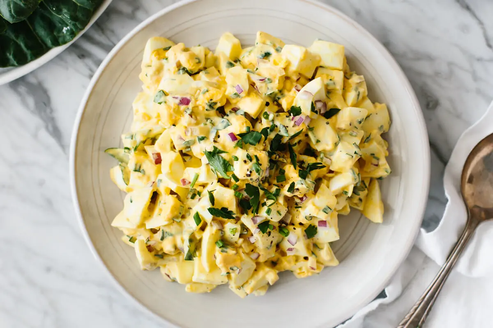

Egg Salad
Home

Photo Credit/Origin: downshiftology.com
Description
Egg salad is a simple dish made from boiled eggs that are chopped and mixed with a dressing made of mayonnaise, mustard, and seasonings. The eggs are typically combined with other ingredients such as chopped onion, celery, pickles, or herbs to add flavor and texture. This versatile dish can be served as a sandwich filling, a salad topping, or a dip with crackers. It's a classic and quick lunch option that can be easily customized to suit personal taste preferences.(credit: https://chat.openai.com/chat chatGPT Jan 2023)
Ingreidients
- 8 eggs
- ½ cup mayonnaise
- ¼ cup chopped green onion
- 1 teaspoon prepared yellow mustard
- ¼ teaspoon paprika
- salt and pepper to taste
Steps:
- Place eggs in a saucepan and cover with cold water. Bring water to a boil and immediately remove from heat. Cover and let eggs stand in hot water for 10 to 12 minutes. Remove from hot water, cool, peel, and chop.
- Place chopped eggs in a bowl; stir in mayonnaise, green onion, and mustard. Season with paprika, salt, and pepper. Stir and serve on your favorite bread or crackers.
Recipe credit: allrecipes.com